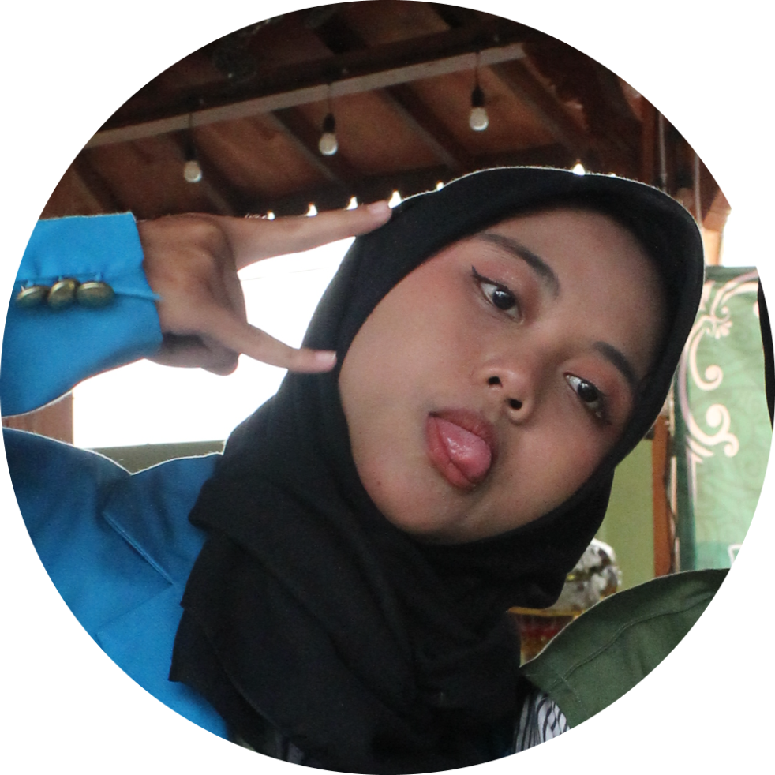
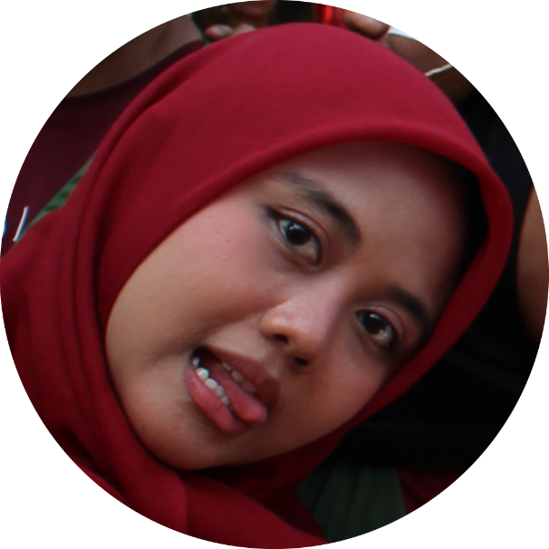
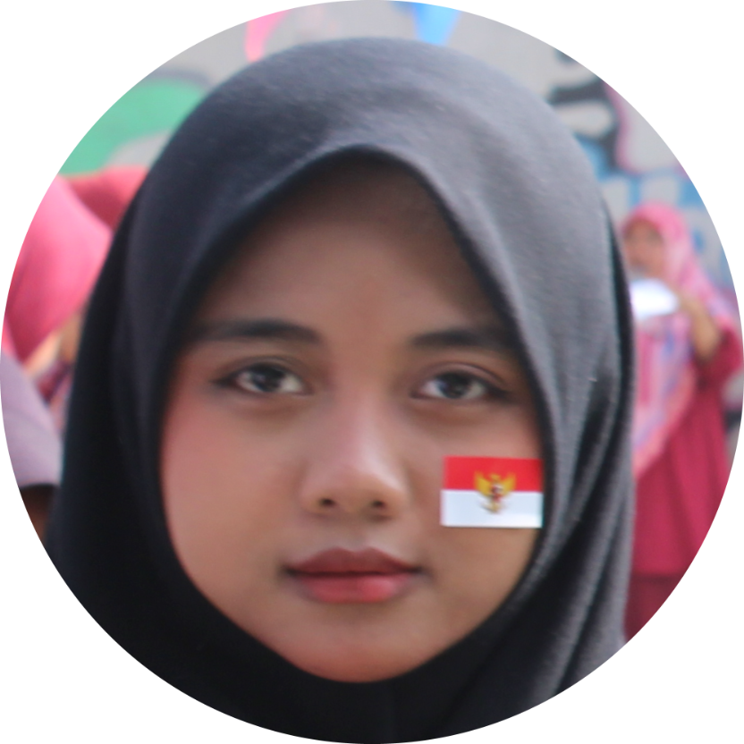
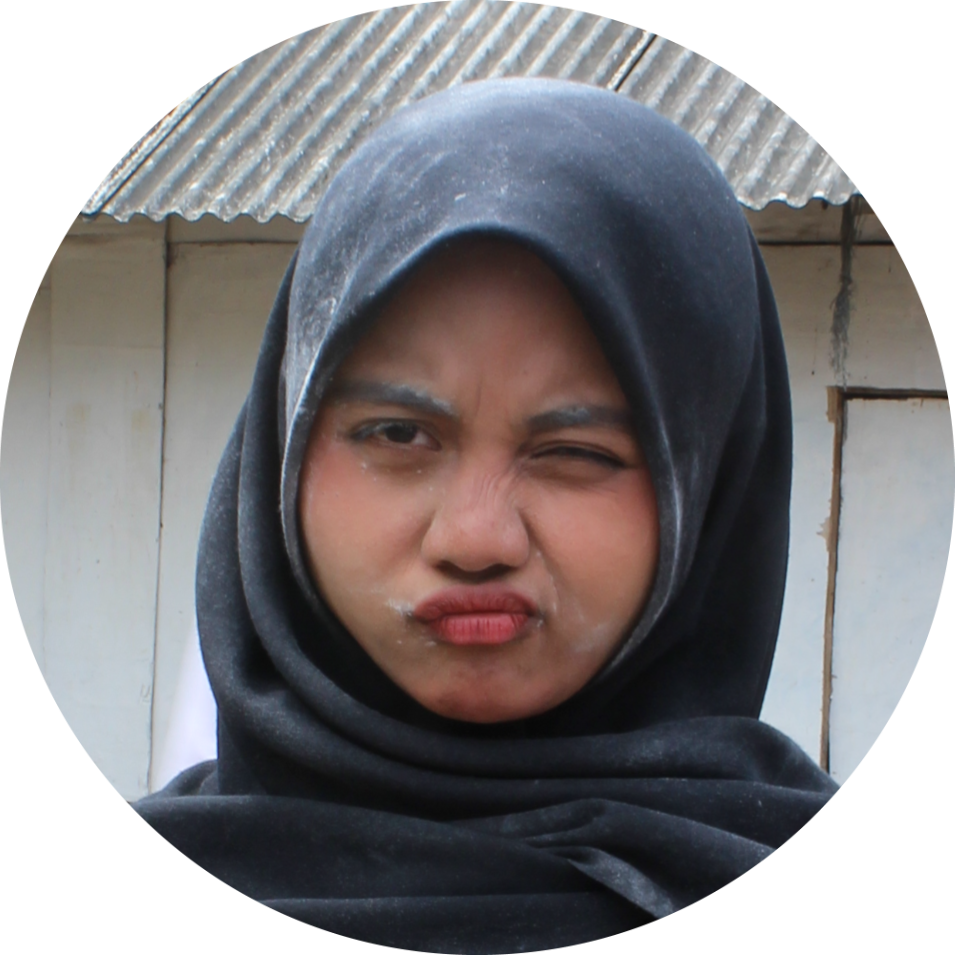
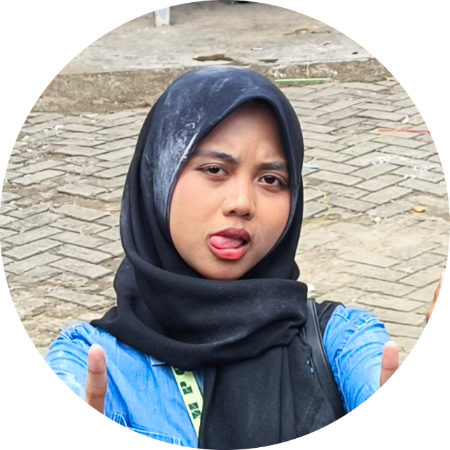

Sorry kalo telat banget buat jawabnya, karena gua kaga enak kalo cuma text biasa, jadi gua effort dikit (dibantu AI tentunya) bikin web simple kek gini, yee.
Sebelum itu, gua mau berterima kasih karena udah mau jadi temen gua, udah mau open ke gua, karena ya gua emang jarang punya temen cewe gitu.
Terus, masuk ke yang pernyataan lu, aman aja ama gua mah. Gua kaga risihan orangnya, justru gua mau say sorry kalo ada salah-salah kata ama perbuatan dari gua ke lu. Itu semua pasti dilakuin kagak sengaja.
Lanjut ke yang FISIP, tinggal atur waktu aja, kan gua masih ngekos di bulan ini, jadi tinggal bilang aja ntar gua datengin tu fisip.
Udah kali yee, itu doang. Gua udah bingung mau ngetik apaan. Last but not least, see you when I see you 😊✌️